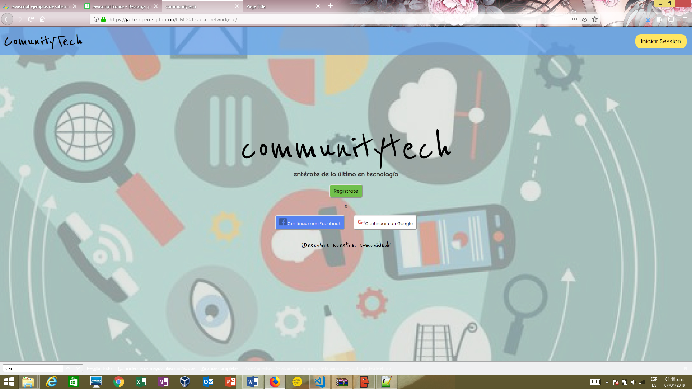

<div id="single-portfolio">
	<div id="portfolio-details" class="container">
		<a class="close-folio-item" href="#"><i class="fa fa-times"></i></a>
		
		<div class="row">
			<div class="col-sm-9">
				<div class="project-info">
					<h3>Community Tech</h3>
					<p> Es una red Social donde podrás enterarte de las ultimas novedades del mundo TEC, la página cuenta con información como: inteligencia artificial, realidad virtual, robótica, ciberseguridad, dispositivos moviles y curiosidades son algunos de los temas que los usuarios suelen publicar, además puedes que puedes comentar, dar likes, subir información multimedia a la red, así como configurar tu perfil, dirigido a los amantes y curiosos por la tecnología.</p>
				</div>
			</div>
			<div class="col-sm-3">
				<div class="project-details">
					<h3>Detalles del proyecto</h3>
					<p><span>Cliente: </span>Laboratoria</p>
					<p><span>Fecha:</span> 19 Feb 2019</p>
					<p><span>Tipo:</span> Red social</p>
				</div>  
			</div>
		</div>
	</div>
</div>